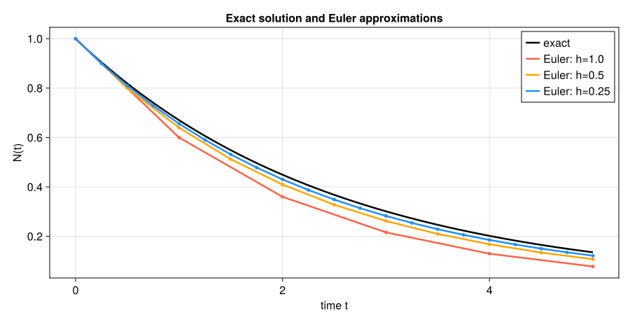
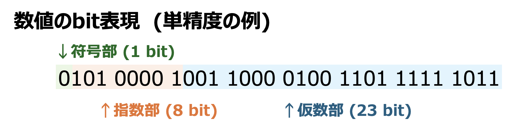

1. 数値解析とは#
データに直線を当てはめたり、方程式の解を求めたりするとき、私たちは計算機から数値の答えを受け取る。では、その答えは何桁程度正しいのだろうか。データが増えても同じ方法で計算できるだろうか。プログラムがエラーなく終了したことだけで、答えが正しいと判断してよいだろうか。
例えば、測定データ \((x_i,y_i)\) に直線 \(y=ax+b\) を当てはめることを考える。回帰分析では、データとのずれを小さくする係数 \(a,b\) を求める。このとき「ずれをどのように測るか」に加えて、「係数をどの手順で計算するか」「計算中の丸めは答えにどの程度影響するか」も問題になる。回帰を初めて学ぶ場合は、ここではデータに合う直線の傾きと切片を計算する場面を思い浮かべればよい。
数値解析は、このように数学的な問題を計算可能な手順に直し、得られた近似値の誤差と、計算に必要な時間・メモリを調べる分野である。入力のわずかな違いや計算途中の丸めに対して結果がどう変わるかも扱う。「計算して値を得ること」と「その値をどこまで信用できるかを確かめること」を一緒に学んでいこう。
注釈
関連する内容として、プログラミング演習1の相関・回帰分析とAI・機械学習論1の線形回帰がある。本講義では、第6章「最小二乗法とQR分解」で回帰の係数を求める計算方法を扱う。これらの講義を履修していなくても、本章は読み進められる。
1.1. この章の目標#
具体例を使って、モデル化・離散化・アルゴリズム・実装・検証の役割を説明できる。
変化率から簡単な更新式を作り、手計算とプログラムの対応を確認できる。
モデル誤差、離散化誤差、丸め誤差の原因を区別できる。
計算結果を確かめ、精度・計算回数・保存するデータ量を比較できる。
本章では微分を「変化率」として使う。微分方程式の解法やJuliaの文法をあらかじめ習得している必要はない。コードには数式との対応を添えるので、まずは手計算、表、図を追ってほしい。実行環境は第2章、Juliaの基本的な書き方は第3章で補う。
この講義の学び方：予想してから計算する
本講義では、コードを実行する前に結果を予想して書き留め、実行後に予想との違いを説明することを繰り返す。例えば「刻み幅を半分にしたら誤差はどうなるか」「この方法とあの方法ではどちらが速いか」を、理由とともに一言書いてから実行しよう。
予想が外れることは失敗ではない。どこで外れたかが、何を理解していなかったかを教えてくれる。計算機や生成AIは答えの数値をすぐに出してくれるが、その数値が正しいか、なぜそうなるかを判断するのは自分である。演習やレポートでも、この「予想 → 計算 → 説明」の記録を重視する。
1.2. 一つの例から始める：時間とともに減る量#
放射性物質の量が時間とともにどう減るかを計算してみよう。十分に多くの原子をまとめて見て、量を連続な値として扱い、単位時間あたりに減る量がその時点の量に比例すると仮定する。
時刻を \(t\)、その時刻の量を \(N(t)\) と書く。比例係数を \(\lambda>0\) とすると、この仮定は
と表せる。左辺は量の時間変化率であり、右辺の負号は量が減ることを表す。\(N_0\) は最初の量である。例えば \(t\) を秒、\(N\) をグラムで測れば、\(dN/dt\) の単位はグラム毎秒であり、\(\lambda\) の単位は毎秒となる。
現象についての仮定を方程式へ表すことをモデル化という。上の式では減少率 \(\lambda\) を一定とし、個々の原子の崩壊のばらつきなどは扱っていない。こうした仮定のために実際の現象とモデルの予測がずれることがあり、そのずれをモデル誤差という。測定値自体の誤差や、\(\lambda\) の推定誤差とも区別して考える必要がある。
この方程式には
という解がある。実際に微分すると \(dN/dt=-\lambda N_0e^{-\lambda t}=-\lambda N(t)\) となり、\(t=0\) を代入すれば \(N(0)=N_0\) も満たす。このように式で表された解を、ここでは解析解と呼ぶ。
解析解があるなら、それを使えばよいと思うかもしれない。しかし、減少率が時間や量に複雑に依存する場合などには、同じような形の解を得られるとは限らない。そこで、まず解の分かる問題で数値的な方法を試し、誤差や実装を確かめる。この例で基準にするのはモデルの方程式の解であり、現実の観測値との一致まで保証するものではない。
1.3. 変化率から更新式を作る#
計算機のメモリに、すべての時刻の値を一つずつ保存することはできない。そこで、時間間隔 \(h>0\) を決め、\(t_k=kh\) という有限個の時刻で値を求める。\(h\) を刻み幅、\(N(t_k)\) の近似値を \(N_k\) と書く。
微分は、短い時間の変化量を時間間隔で割ったものの極限である。\(h\) が十分小さければ、
と近似できる。両辺に \(h\) をかけて並べ替え、近似値 \(N_k\) で計算することにすると、
という更新式を得る。「次の量＝現在の量＋時間間隔×現在の変化率」と読むとよい。この方法をEuler法という。連続な時間についての方程式を、有限個の時刻における更新式で近似する操作は離散化の一例である。
ここでは、各区間で変化率を区間の初めの値 \(-\lambda N_k\) に固定している。実際には区間内でも \(N\) が減り、それとともに減り方も緩やかになる。この違いが、更新式から得た値と解析解の差を生む。
1.3.1. 最初の2ステップを手で計算する#
量を初期量で規格化して \(N_0=1\) とし、時間の単位を固定して \(\lambda=0.4\)、\(h=1\) とする。このとき \(1-h\lambda=0.6\) なので、
となる。添字 \(k\) は更新回数を表している。一般には時刻そのものではなく、時刻は \(t_k=kh\) である。
更新回数 \(k\) |
時刻 \(t_k\) |
Euler法の値 \(N_k\) |
解析解 \(e^{-0.4t_k}\)（概数） |
|---|---|---|---|
0 |
0 |
1 |
1 |
1 |
1 |
0.6 |
0.670320 |
2 |
2 |
0.36 |
0.449329 |
Euler法でも減少する様子は表せているが、この刻み幅では減りすぎている。では、刻み幅を小さくすると、どのくらい改善するだろうか。
1.4. 数学的な問題を計算可能な形へ変える#
ここまでの例を、数値計算の流れとして整理しよう。
段階 |
この例で行うこと |
|---|---|
モデル化 |
減少の速さが現在の量に比例すると仮定し、\(N'=-\lambda N\) と初期量を定める |
離散化 |
微分を有限の時間間隔での差に置き換える |
アルゴリズム |
初期量から出発し、\(N_{k+1}=(1-h\lambda)N_k\) を順に計算する |
実装 |
更新式と繰り返しをプログラムで表す |
検証 |
同じ時刻の解析解と比べ、刻み幅を変えた影響も調べる |
アルゴリズムとは、入力から結果を得るための具体的な計算手順である。同じ微分方程式にも複数の離散化やアルゴリズムがあり得る。また、すべての問題で時間や空間の離散化が必要なわけではない。例えば有限個の未知数からなる連立一次方程式は、与えられた行列とベクトルから計算を始められる。
結果が期待と合わないときは、この流れのどこに原因があるかを考える。方程式が現象を十分表していないのか、刻み幅が粗いのか、それともプログラムが更新式を正しく実装していないのかでは、必要な対処が異なる。
1.5. 刻み幅を変えて解析解と比較する#
最終時刻を \(T=5\) とし、\(N(T)\) を計算する。比較する時刻をそろえるため、先にステップ数 \(n\) を決めて \(h=T/n\) とする。\(n=5,10,20\) なら \(h=1,0.5,0.25\) であり、いずれも \(n\) 回の更新で同じ時刻 \(T\) に到達する。
次の関数の入力は \(\lambda,N_0,T,n\)、出力は最終時刻の近似値である。変数 N に現在の値を保存し、更新するたびに同じ変数へ代入する。N = N - h*λ*N の右辺で使うのは更新前の値である。
Juliaでは function ... end で関数を定義し、for ... end で繰り返す。1:n は1から \(n\) までの整数、return は関数の結果を返す命令である。n::Integer はステップ数として整数を受け取る指定である。関数内の最初の2行は、ステップ数と最終時刻が正であることを確かめ、満たさない場合には理由を表示して処理を止める。
function euler_decay(λ, N0, T, n::Integer)
n > 0 || throw(ArgumentError("ステップ数nは正の整数にしてください"))
T > 0 || throw(ArgumentError("最終時刻Tは正にしてください"))
h = T/n
N = N0
for k in 1:n
N = N - h*λ*N
end
return N
end
数値解 \(N_n\) と解析解 \(N(T)\) の差の大きさ
を計算しよう。これを絶対誤差という。Juliaの abs は絶対値、exp は指数関数を計算する。次のコードは、ステップ数を倍にしたときの誤差の比 \(E_n/E_{2n}\) も表示する。この比が約2なら、誤差が約半分になったことを意味する。
println は結果を表示し、round(...; sigdigits=6) は表示のために有効数字を6桁に丸めている。計算途中の値を6桁に制限しているわけではない。文字列中の $ は変数の値を埋め込むJuliaの記法である。
表の最後の列を作るため、previous_error に前回の誤差を保存する。最初は前回の値がないので nothing とし、その場合は比の欄を「—」と表示する。let ... end は、この部分で使う変数の範囲を区切る書き方である。
λ = 0.4
N0 = 1.0
T = 5.0
exact = N0*exp(-λ*T)
println("解析解 N(T) = ", exact)
println("n | h | 数値解 | 絶対誤差 | 前の誤差/今回の誤差")
let previous_error = nothing
for n in (5, 10, 20)
h = T/n
numerical = euler_decay(λ, N0, T, n)
error = abs(numerical-exact)
ratio = isnothing(previous_error) ? "—" : string(round(previous_error/error; digits=3))
println(n, " | ", h, " | ", round(numerical; sigdigits=6),
" | ", round(error; sigdigits=6), " | ", ratio)
previous_error = error
end
end
解析解 N(T) = 0.1353352832366127
n | h | 数値解 | 絶対誤差 | 前の誤差/今回の誤差
5 | 1.0 | 0.07776 | 0.0575753 | —
10 | 0.5 | 0.107374 | 0.0279611 | 2.059
20 | 0.25 | 0.121577 | 0.0137586 | 2.032
この計算結果を表に整理すると、次のようになる（表示値は丸めている）。
ステップ数 \(n\) |
刻み幅 \(h\) |
数値解 \(N_n\) |
絶対誤差 \(E_n\) |
前の誤差／今回の誤差 |
|---|---|---|---|---|
5 |
1 |
0.0777600 |
0.0575753 |
— |
10 |
0.5 |
0.107374 |
0.0279611 |
2.059 |
20 |
0.25 |
0.121577 |
0.0137586 |
2.032 |
解析解は \(N(5)=e^{-2}\approx0.135335\) である。刻み幅を半分にすると数値解がこの値に近づき、誤差はおよそ半分になっている。その代わり、更新回数は倍になった。
この差は主に、微分方程式を有限の刻み幅の更新式で置き換えた離散化誤差である。この例では計算機による丸めの影響はそれよりずっと小さい。解析解の exp による評価自体も有限精度の計算だが、ここで比較している離散化誤差を調べるには十分な精度を持つ。
1.5.1. 図で途中の時刻も見る#
最終時刻だけでなく、途中の時刻でも解析解と比べてみよう。図の点はEuler法で計算した値であり、それを結ぶ線は変化を見やすくするために描いている。黒線が解析解である。
図はブックに掲載しているので、そのまま読み取れる。次の折りたたみ内のコードは図を再作成したい場合に使う。追加パッケージ CairoMakie が必要であり、上の数値実験だけならインストールは不要である。
Show code cell source
# 図を再作成する場合のみ実行する。
# CairoMakieが未導入なら一度だけ実行: import Pkg; Pkg.add("CairoMakie")
using CairoMakie
CairoMakie.activate!(type="svg")
let λ = 0.4, N0 = 1.0, T = 5.0
fig = Figure(size=(900, 460), fontsize=16)
ax = Axis(fig[1, 1]; xlabel="time t", ylabel="N(t)",
title="Exact solution and Euler approximations")
t_exact = range(0.0, T, length=500)
lines!(ax, t_exact, N0 .* exp.(-λ .* t_exact);
color=:black, linewidth=2.5, label="exact")
for (n, color) in zip((5, 10, 20), (:tomato, :orange, :dodgerblue))
h = T/n
t = collect(0:n) .* h
values = zeros(n+1)
values[1] = N0
for k in 1:n
values[k+1] = values[k] - h*λ*values[k]
end
lines!(ax, t, values; color=color, linewidth=2.5, label="Euler: h=$h")
scatter!(ax, t, values; color=color, markersize=7)
end
axislegend(ax; position=:rt)
# ワークスペースのルート、またはnotebooksディレクトリから実行する。
figure_dir = isdir("pic") ? "pic" : joinpath("..", "pic")
mkpath(figure_dir)
save(joinpath(figure_dir, "numerical_analysis_discretization.svg"), fig)
end


図 1.1 \(N_0=1\)、\(\lambda=0.4\)、\(T=5\) とした比較。表と同じ刻み幅を用いている。各区間の初めの減少率を使い続けるため、この例のEuler法は解析解より小さい値を与える。#
この例で見えた「刻み幅を半分にすると誤差が約半分」という関係を、数値実験だけでなく数式で説明するのは第9章「常微分方程式の初期値問題」の課題である。どの方法でも同じ減り方になるとは限らず、刻み幅を際限なく小さくすれば常に改善するわけでもない。
1.5.2. 計算回数とメモリは分けて考える#
euler_decay は1回の更新で乗算2回と減算1回を行うので、更新部分では合計 \(3n\) 回の四則演算を行う。この数え方では、刻み幅を求める除算やループの制御などは含めない。更新回数が倍になれば、更新部分の演算回数も倍になる。実行時間には関数の初回実行に伴う準備なども影響するため、短い計算で測った時間がそのまま倍になるとは限らない。
一方、この関数は現在の値 N を上書きするため、途中の値を \(n\) 個保存する必要はない。図を描くコードでは、全時刻の値を配列 values に保存している。倍精度の数を1個8バイトで保存すると、この配列の数値データだけで \(8(n+1)\) バイトを要する。時刻の配列や配列の管理情報には別にメモリが必要である。
このように、精度を上げると仕事量が増える場合があり、保存する情報も目的に応じて選ぶ。「最終時刻の値だけが必要か」「途中の変化も必要か」は、実装を決めるときの大切な問いである。
1.6. 計算機が持つ有限性と丸め誤差#
これまでの実験では、連続な時間を有限の刻み幅で近似した。もう一つの近似は、数そのものを有限の桁数で表すことから生じる。
10進数で \(1/3=0.333\ldots\) を有効数字3桁で記録すると \(0.333\) になる。表示できる桁を増やせば近づくが、有限桁では一致しない。同じように、計算機で一般に使う2進数では、10進数の \(0.1\) が
という循環小数になる。有限の桁で保存する際に、近くの表現可能な値に置き換える必要があり、これを丸め、それによって生じる差を丸め誤差という。数字を入力した時点だけでなく、演算結果を保存するときにも丸めが起こり得る。
println("0.1 + 0.2 = ", 0.1 + 0.2)
println("0.1 + 0.2 == 0.3 ? ", 0.1 + 0.2 == 0.3)
println("差 = ", (0.1 + 0.2) - 0.3)
println("isapprox(0.1 + 0.2, 0.3) ? ", isapprox(0.1 + 0.2, 0.3))
0.1 + 0.2 = 0.30000000000000004
0.1 + 0.2 == 0.3 ? false
差 = 5.551115123125783e-17
isapprox(0.1 + 0.2, 0.3) ? true
最初の結果は 0.30000000000000004 となり、== による完全一致の比較は false になる。これは数学の等式が変わったのではなく、近似して保存された値を用いて演算しているためである。isapprox は許容誤差の範囲で近いかを調べる関数で、この例では true となる。ただし、何を「十分近い」とするかは問題に依存する。常に既定の許容誤差でよいわけではなく、第4章で誤差の大きさを測る方法を学ぶ。
1.6.1. 浮動小数点数と有効桁数#
数を \(6.02\times10^{23}\) のように有効数字と桁の大きさに分けて書く表記を思い出そう。計算機も同様に、概ね
という形式で数を表す。\(m\) は有効数字を担う仮数、\(e\) は大きさを調整する指数である。指数によって小数点の位置が動くので、浮動小数点数と呼ぶ。
Juliaで 1.0 や 0.1 と書いた値は、通常は64ビットの倍精度浮動小数点数 Float64 になる。有効桁数は10進でおよそ15〜16桁であり、小数点以下を常に16桁保存するという意味ではない。絶対値が大きくなると、区別できる数の間隔も大きくなる。32ビットの単精度 Float32 は、1個あたりの記憶量が半分になる代わりに有効桁数が少ない。
マシンイプシロンは、1と、1より大きい次の表現可能数との差である。Juliaでは eps(Float64) や eps(Float32) で確認でき、1付近で区別できる数の間隔を知る目安になる。
println("eps(Float64) = ", eps(Float64))
println("eps(Float32) = ", eps(Float32))
println("1より大きい次のFloat64との差 = ", nextfloat(1.0) - 1.0)
println("1.0付近の間隔 = ", eps(1.0))
println("1.0e16付近の間隔 = ", eps(1.0e16))
println("1.0e16 + 1.0 == 1.0e16 ? ", 1.0e16 + 1.0 == 1.0e16)
eps(Float64) = 2.220446049250313e-16
eps(Float32) = 1.1920929e-7
1より大きい次のFloat64との差 = 2.220446049250313e-16
1.0付近の間隔 = 2.220446049250313e-16
1.0e16付近の間隔 = 2.0
1.0e16 + 1.0 == 1.0e16 ? true
Float64 のマシンイプシロンは約 \(2.22\times10^{-16}\) だが、\(10^{16}\) 付近の数の間隔は2になる。この例では1を足しても元の数に丸められる。マシンイプシロンは、表せる最小の正数でも、長い計算全体の誤差の上限でもない。
ここまでの誤差を整理しておこう。
誤差 |
主な原因 |
この章の例・対処の方向 |
|---|---|---|
モデル誤差 |
現象を表す仮定や単純化 |
一定の減少率でよいかなど、モデルと観測を照合する |
離散化誤差 |
連続な問題を有限個の値の関係で近似 |
Euler法の刻み幅を変え、解析解への近づき方を調べる |
丸め誤差 |
数や演算結果を有限桁で表す |
使用する精度や、演算の順序・式の形を検討する |
無限級数を途中の項で止めたり、微分の近似でTaylor展開の高次項を省いたりしたときの誤差は打切り誤差と呼ぶ。Euler法の離散化誤差も、こうした近似と関係しているので、これらを常に独立した誤差として足し合わせるわけではない。
入力データの測定誤差やプログラムの実装ミスも結果に影響するが、丸め誤差とは原因が異なる。刻み幅を小さくすること、桁数を増やすこと、モデルを見直すことは、それぞれ別の問題に対する対処である。誤差の定量的な評価と、誤差が増幅される仕組みは第4章「誤差・条件数・計算量」で扱う。
1.7. \(\clubsuit\) 浮動小数点数の内部表現#
ここでは浮動小数点数の範囲と桁数を、ビットの割り当てから確かめる。初読時にはこの節を飛ばしてもよい。
1.7.1. 単精度：符号・指数・仮数#
IEEE 754の単精度形式（binary32、Juliaの Float32）は、符号に1ビット、指数の格納値に8ビット、仮数の小数部分に23ビットを使う。


符号ビットを \(s\in\{0,1\}\)、指数部に格納された整数を \(E\) とする。正規化数では、
と解釈する。仮数は
である。例えば \(b_1=1\) なら \(1/2\)、\(b_2=1\) なら \(1/4\) を加える。先頭の1は格納を省略できるので、23ビットの小数部分と合わせて、2進で24桁の有効数字を持つ。
指数部の8ビットで \(0\)〜\(255\) を格納できるが、両端の値は特別な用途に使われる。通常の指数は、格納値 \(E\) から127を引いた \(e=E-127\) であり、
となる。このように一定値を加えて格納する方法を、バイアス表現、あるいはゲタ履き表現という。
最大の有限値は、仮数の小数部分がすべて1、指数が127の場合で、
である。最小の正の正規化数は、仮数が1、指数が \(-126\) の場合で、
となる。
1.7.2. ゼロに近い数と特別な値#
\(E=0\) の場合は、先頭に暗黙の1を置かず、
と解釈する。小数部分も0なら符号付きのゼロ、それ以外は 非正規化数（subnormal number） である。最後のビットだけが1の場合に、最小の正数
を得る。したがって、最小正規化数より小さい値が直ちにゼロになるわけではない。非正規化数では、ゼロに近づくほど相対的な精度が低下する。
\(E=255\) は無限大 Inf と、非数 NaN（Not a Number）を表すために使う。例えば、浮動小数点数の 0.0/0.0 は NaN となる。大きすぎる演算結果が有限値の範囲を超える現象をオーバーフローといい、通常の丸めでは Inf になる場合がある。小さすぎる結果を扱うときのアンダーフローでは、非正規化数としての表現やゼロへの丸めが関係する。範囲の問題に対しては、量の尺度を変える、対数で計算するなどの工夫が必要になることがある。
1.7.3. マシンイプシロンと倍精度#
1より大きい次の単精度数は \(1+2^{-23}\) なので、
となる。最も近い表現可能数に丸める方式では、通常の正規化数の範囲で1回の丸めの相対誤差を評価する際に、この半分の \(u=\varepsilon_{\mathrm{mach}}/2\) を使う。\(u\) を単位丸め誤差と呼ぶ。本資料ではマシンイプシロンと区別し、第4章でその役割を扱う。
倍精度（binary64、Float64）は、符号1ビット、指数部11ビット、小数部分52ビットからなり、正規化数の有効数字は2進で53桁である。指数のバイアスは1023で、同様に格納値の両端を除くと \(-1022\le e\le1023\) となる。
性質 |
単精度 |
倍精度 |
|---|---|---|
最大有限値 |
\((2-2^{-23})2^{127}\) |
\((2-2^{-52})2^{1023}\) |
最小の正規化正数 |
\(2^{-126}\) |
\(2^{-1022}\) |
非正規化数を含む最小正数 |
\(2^{-149}\) |
\(2^{-1074}\) |
マシンイプシロン |
\(2^{-23}\) |
\(2^{-52}\) |
Juliaの floatmin は最小正規化正数を返す。ゼロより大きい次の表現可能数は nextfloat で調べられる。
出力では、最小の正の Float32 が 1.0e-45 のように短く表示される。これは、同じ型で読み戻したときに元の値になる10進表記であり、その数の正確な10進展開ではない。格納された値そのものは上で導いた \(2^{-149}\) である。
1.8. 同じ式にも異なるアルゴリズムがある#
離散化を必要としない計算でも、手順の選び方は重要である。回帰曲線などにも使う多項式を例にしよう。次の値を求めたいとする。
まず定数項以外から \(x\) を括り出し、同じ操作を内側の式に繰り返すと、
となる。最も内側の \(2x-5\) から順に計算すれば、\(x^2,x^3,x^4\) を別に作る必要がない。この評価方法をHorner法という。
演算回数を比べるため、直接評価では \(x^2=x\times x\)、\(x^3=x^2\times x\)、\(x^4=x^3\times x\) と順に作り、その値を再利用すると決める。係数との乗算も1回ずつ数える。すると、
方法 |
べき乗を作る乗算 |
係数との乗算など |
乗算の合計 |
加減算の合計 |
|---|---|---|---|---|
べき乗を再利用する直接評価 |
3 |
4 |
7 |
4 |
Horner法 |
0 |
4 |
4 |
4 |
となる。以下のコードでも、この数え方に対応する演算を明示している。x^4 のような記法が実行時にどのように処理されるかは言語や処理系によるため、数式の見た目だけから実際の演算回数や実行時間を決めつけないようにしよう。
function p_direct(x)
x2 = x*x
x3 = x2*x
x4 = x3*x
return 2*x4 - 5*x3 + 8*x2 - 3*x + 2
end
p_horner(x) = (((2*x - 5)*x + 8)*x - 3)*x + 2
for x in (-1.0, 0.5, 2.0)
println("x=$x: 直接評価=$(p_direct(x)), Horner法=$(p_horner(x))")
end
x=-1.0: 直接評価=20.0, Horner法=20.0
x=0.5: 直接評価=2.0, Horner法=2.0
x=2.0: 直接評価=20.0, Horner法=20.0
この3点での値は、それぞれ20、2、20で両者が一致する。手計算でも確かめてほしい。多項式を大量の点で評価する場合には、1点あたりの演算回数の差が積み重なる。
数学的には同じ多項式でも、浮動小数点演算では演算順序によって丸めが起こる場所が変わるため、一般の入力で結果が完全一致するとは限らない。また、乗算が少ないことだけで、どの入力でも誤差が小さいとは断定できない。「計算が少ないか」と「十分正確か」の両方を確かめる必要がある。
1.9. 数値結果を検証する#
指数減衰の例に戻ろう。解析解と比べる以外にも、解が満たすべき性質を調べられる。\(N_0>0\)、\(\lambda>0\) なら、量は正のまま減少するはずである。
ところが、Euler法の更新係数は \(1-h\lambda\) なので、\(h\lambda>1\) では正の値から負の値へ更新してしまう。例えば \(T=5\) をたった1ステップで進めると \(h=5\) となり、\(N_1=(1-5\times0.4)N_0=-N_0\) となる。量を負にしてしまうこの計算は、減衰現象の近似として不適切である。
次のコードでは、最終値だけでなく、各ステップで「非負か」「増えていないか」を点検する。負になった後に再び正になる場合もあるため、最終値だけの確認では不十分である。
let λ = 0.4, N0 = 1.0, T = 5.0
for n in (1, 5, 10, 20)
h = T/n
N = N0
nonnegative = true
nonincreasing = true
for k in 1:n
Nnext = N - h*λ*N
nonnegative = nonnegative && (Nnext >= 0)
nonincreasing = nonincreasing && (Nnext <= N)
N = Nnext
end
println("n=$n, h=$h: 全ステップで非負=$nonnegative, 単調減少=$nonincreasing",
", 最終値の絶対誤差=", round(abs(N-N0*exp(-λ*T)); sigdigits=6))
end
end
n=1, h=5.0: 全ステップで非負=false, 単調減少=true, 最終値の絶対誤差=1.13534
n=5, h=1.0: 全ステップで非負=true, 単調減少=true, 最終値の絶対誤差=0.0575753
n=10, h=0.5: 全ステップで非負=true, 単調減少=true, 最終値の絶対誤差=0.0279611
n=20, h=0.25: 全ステップで非負=true, 単調減少=true, 最終値の絶対誤差=0.0137586
\(n=1\) では非負性の確認に失敗する。\(n=5,10,20\) ではどちらの性質も満たすが、最終値の誤差は異なる。つまり、性質を満たすことは有用な点検であって、精度の保証ではない。同様に、刻み幅を変えて値があまり変わらないことだけでは、正解に近いと断定できない。実装の誤りなどにより、同じ誤った値を返し続けることもある。
方程式へ近似解を代入したとき、どの程度等式を満たさないかを表す量を残差という。例えば \(2x=1\) に対して \(\hat{x}=0.49\) なら、\(r=1-2\hat{x}=0.02\) である。解そのものの誤差 \(|0.5-0.49|=0.01\) とは異なる量である。残差と解の誤差の関係は問題によって変わり、第4章で詳しく学ぶ。
Euler法の更新式を同じ演算で再確認するだけでは、その更新式が微分方程式を十分正確に近似しているかは分からない。検証では、何に対する一致を調べているのかを意識しよう。
新しい問題を計算するときには、次のように複数の手がかりを組み合わせる。
解析解や手計算の答えが分かる小さな問題で、実装を試す。
刻み幅や停止条件を変え、答えの変化と計算回数を調べる。
非負性、保存則、対称性など、問題固有の性質を確認する。
方程式の残差や、別の方法・高精度計算の結果と比較する。
最終的には、答えだけでなく、使用した入力・計算方法・設定と、どのように検証したかを一緒に記録する。出力された桁数が、そのまま正しい桁数を表すわけではない。
1.10. まとめ#
本章のまとめ
数値解析では、数学的な問題を計算手順へ直し、近似値の誤差と仕事量を調べる。
Euler法は、現在の変化率を使って短時間先の値を近似する方法である。解析解との比較から、刻み幅と誤差の関係を調べられる。
モデル化、離散化、有限桁での丸めは、それぞれ異なる理由で結果に影響する。
数学的に同じ式でも、計算手順によって演算回数や丸めの影響が変わる。
既知の解との比較、設定の変更、問題固有の性質の確認を組み合わせて、結果を検証する。
次の第2章「Linux環境とコマンド」では、コードやデータを保存し、プログラムを実行するための基本操作を扱う。第3章「Juliaと線形代数」で実装の準備を整えた後、第4章で本章の誤差・計算量の考え方を定量化する。
1.11. 演習#
解答には数値だけでなく、使った設定、予想と結果の比較、結果から何が分かるかを含めること。演習1・2・4はコードを実行せずに取り組める。
演習
更新式と手計算：\(N_0=1\)、\(\lambda=0.4\)、\(h=0.5\) とし、Euler法で時刻 \(t=1\) までの2ステップを計算せよ。本文の \(h=1\) による同じ時刻の値と比べ、どちらが解析解 \(e^{-0.4}\approx0.670320\) に近いか確認せよ。添字と時刻の関係も書くこと。
誤差の原因：「一定の減少率という仮定が現象に合わない」「Euler法で刻み幅を大きくしたら解析解から離れた」「
0.1 + 0.2 == 0.3がfalseになった」は、それぞれどの誤差に対応するか。さらに、更新式の負号を誤って正号にした場合との違いを説明せよ。精度と計算回数：本文の \(T=5\) の実験に \(n=40,80\) を追加し、刻み幅、最終値の絶対誤差、誤差の比、更新部分の演算回数 \(3n\) を表にせよ。誤差を約半分にするために仕事量をどの程度増やしたか説明せよ。
Horner法：\(q(x)=3x^5-2x^4+4x^3-x^2+2x-1\) をHorner法の形に書き直し、\(x=1\) で値を確認せよ。直接評価では \(x^2\) から \(x^5\) を順に作って再利用するとし、両者の乗算回数と加減算回数を比べよ。係数 \(1,-1\) の扱いも明記せよ。
検証の限界：\(N_0>0\)、\(\lambda>0\) とする。Euler法の更新式から、1ステップ後の値が非負で、更新前の値以下となる \(h\lambda\) の範囲を求めよ。その範囲を満たせば数値解が十分正確と言えるか、本文の表を使って説明せよ。
1.12. 参考文献と関連する節#
T. A. Driscoll and R. J. Braun, Fundamentals of Numerical Computation, §1.1 Floating-point numbers、§1.3 Algorithms、§6.2 Euler's method。浮動小数点数、Horner法と演算回数、Euler法の背景を学ぶ際に参照できる。
Oracle, Numerical Computation Guide, Chapter 2: IEEE Arithmetic。単精度・倍精度の格納形式、正規化数と非正規化数、特殊値の説明。